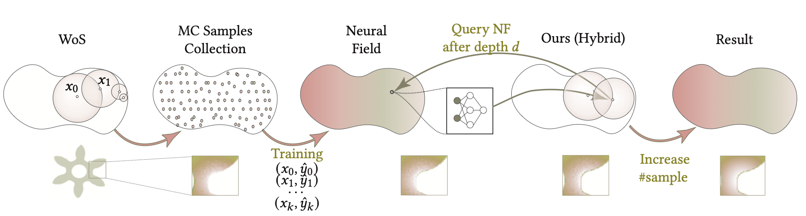

Neural Caches for Monte Carlo Partial Differential Equation Solver
Cornell University
SIGGRAPH Asia 2023 (Conference)
We combine Neural Field with Monte Carlo method, provide a faster and more accurate PDE solver.
We visualize a slice of the solution to an elliptic PDE within a dragon-shaped boundary. Our hybrid solver can reduce the error of the neural field baseline, while achieving lower variance compared to the Walk-on-Spheres (VCWoS) method when working within the constraints of a limited computing budget
Abstract
This paper presents a method that uses neural networks as a caching mechanism to reduce the variance of Monte Carlo Partial Differential Equation solvers, such as the Walk-on-Spheres algorithm[Sawhney and Crane 2020]. While these Monte Carlo PDE solvers have the merits of being unbiased and discretization-free, their high variance often hinders real-time applications. On the other hand, neural networks can approximate the PDE solution, and evaluating these networks at inference time can be very fast. However, neural-network-based solutions may suffer from convergence difficulties and high bias. Our hybrid system aims to combine these two potentially complementary solutions by training a neural field to approximate the PDE solution using supervision from a WoS solver. This neural field is then used as a cache in the WoS solver to reduce variance during inference. We demonstrate that our neural field training procedure is better than the commonly used self-supervised objectives in the literature. We also show that our hybrid solver exhibits lower variance than WoS with the same computational budget: it is significantly better for small compute budgets and provides smaller improvements for larger budgets, reaching the same performance as WoS in the limit.
Introduction
Solving PDEs without discretization is valuable in many graphics application. Monte Carlo PDE solvers are un-biased but suffer from high variance. In contrast, Neural Fields-based solvers offer faster inference but often yield biased outcomes. We propose to use neural field caches to reduce variance in Monte Carlo PDE solvers.
Method
We want to build a hybrid solver to reduce the inference time for WoS by querying the neural field after a fixed compute budget. We achieve this hybrid solver in two steps. First, we use a WoS estimator to provide target data to supervise the neural field to approximate the PDE solution. Once we obtain a neural field with a small enough error, we use a hybrid WoS solver that terminates the recursive call by querying the neural field. Intuitively, this hybrid solver can lower the error of the neural field solution since it performs WoS-style random walks that can terminate at the boundary. At the same time, it can achieve lower variance than the WoS estimator since it conducts shorter walks.
Equal Time Comparison
We solve a variable coefficient screened Poisson equation with different domain shapes, including high-genus shapes like Sprocket (Row 2) and shapes with thin structures and sharp edges (Row 3). We sample a 512x512 slice for each method and allocate 5 minutes of compute time to obtain the result. We can see that the hybrid solver can achieve more accurate results than both the self-supervised baseline (with high bias) and the WoS baseline (with high variance). The performance gap is larger when the PDE solution is high-frequency.
Equal Sample Comparison
L: we show the number of walks v.s. MSE curves. Our method achieves lower MSE when the number of walks is limited. R: a qualitative comparison of different models at 100 walks per pixel.
Computation Time Breakdown
Computational time breakdown for WoS and our method. We report the time it took each of the methods to reach an MSE error of less than 5e-3. Our hybrid solver is faster than WoS when there are more test samples.
Acknowledgements
This research was supported in part by the National Science Foundation under grant 2212084, grant 2144117, and by the RI-CAREER award 2046760. We want to thank Rohan Sawhney and Wenqi Xian for their discussions.